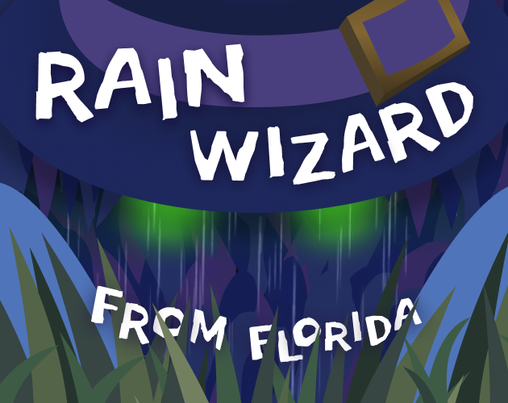

"Rain Wizard From Florida" is a third person semi open world horror game in which the player enbodies Rain Wizard. The goal is to charge three telephone poles to restore the electricity in Florida while Skunk Ape is chasing the player. Exploring is ancouraged using mainly sounds around the map. Main mechanics include hiding, charging and listening to gossip to locate the telephone poles. We devided the project into the team members so my role was game developer specifically for Skunk Ape which is an AI agent, the hiding mechanic for Rain Wizard, a proceduaral generated map and the tutorial.
The enemy AI is driven by a Finite State Machine (FSM) with three main states: Patrolling, Following, and Roaming. The AI transitions between these states based on the player's actions and visibility. While patrolling, the enemy follows a series of waypoints. If the player enters its field of view, it switches to a chasing behavior. When the player is interacting with a telephone pole, the AI enters a roaming state, dynamically changing its patrol strategy to increase pressure on the player.

The AI navigates the environment using Unity's NavMeshAgent, allowing it to move intelligently around obstacles and terrain. During patrol, the enemy follows a set of procedurally generated waypoints and briefly pauses at each location before continuing. The system also supports dynamic movement behaviors, such as returning to the closest patrol point after losing the player or orbiting around telephine poles objectives when required.
The enemy detects the player using a custom field-of-view system that checks distance, viewing angle, and line of sight. Once the player is spotted, the AI enters a chase state and continuously updates its destination to the player's current position. If the player successfully hides, the enemy can temporarily search the area before resuming its patrol route, creating a more believable and engaging stealth experience.
One main problem we encountered early on was the replayability aspect of the game. After some successful runs the player would remember what paths does skunk ape take and the general location of the game objects. To imorive this aspect I made some game objects to be procedural generated including trees, rocks, logs and most importantly the points Skunk Ape uses to patrol the map. This way the game becomes more unpredictable after the first run. All the objects that are PG share the same code, but are spawned in different areas. The following picture shows the area where certain objets spawn for the forest level which is limited within the red area.


I did the tutorial map which introduces all the mechanics needed to proceed to the main level. Coded the hiding mechanic, and the interaction mechanic with objects, also rearranged all the elements so the tutorial is bottle neck and not open world so the player knows where to go.